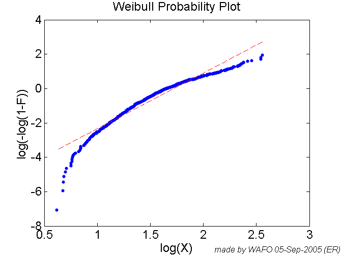
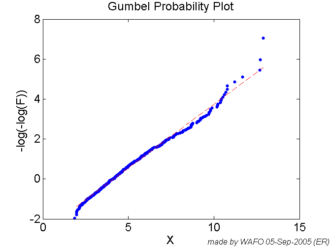
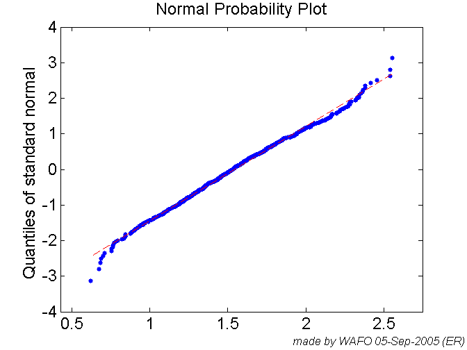
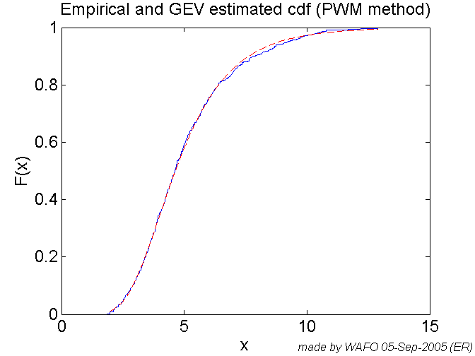
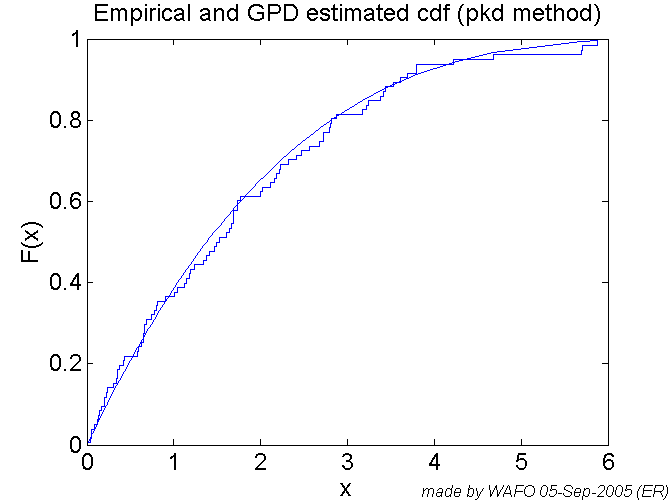
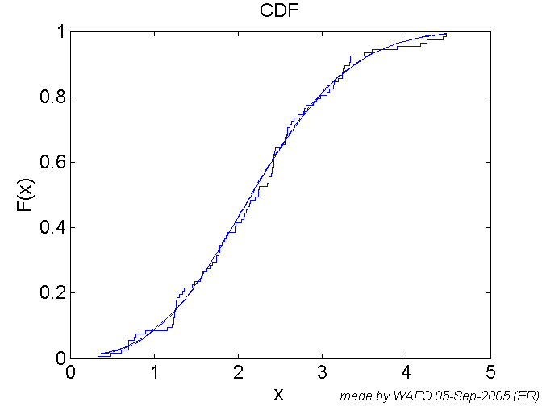
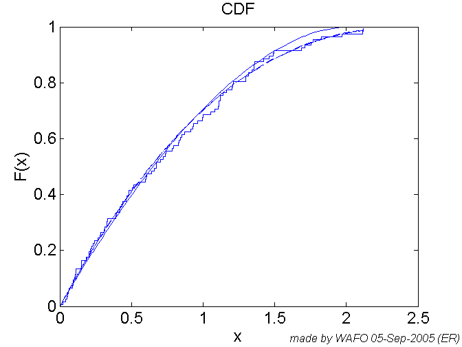
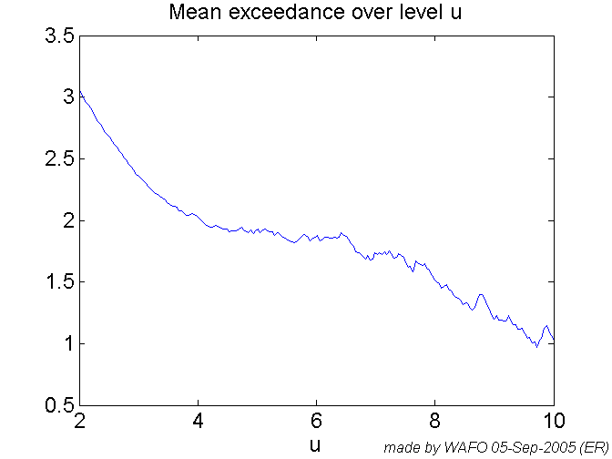
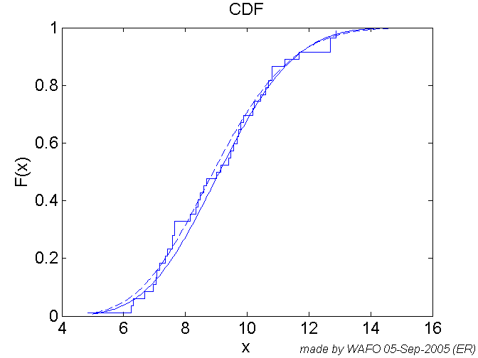

CALL: Chapter5
Some of the commands are edited for fast computation. Each set of commands is followed by a 'pause' command.
% Tested on Matlab 5.3 % History % Revised pab sept2005 % Added sections -> easier to evaluate using cellmode evaluation. % Created by GL July 13, 2000 % from commands used in Chapter 5 %
pstate = 'off' % Significant wave-height data on Weibull paper, Hs = load('atlantic.dat'); wei = wweibplot(Hs) wafostamp([],'(ER)') pause(pstate)
pstate =
off
wei =
5.5963 3.2428
 Significant wave-height data on Gumbel paper,
gum=wgumbplot(Hs)
wafostamp([],'(ER)')
pause(pstate)
gum =
1.5680 4.1319
 Significant wave-height data on Normal probability paper,
wnormplot(log(Hs),1,0);
wafostamp([],'(ER)')
pause(pstate)
 % Empirical distribution of significant wave-height with estimated % Generalized Extreme Value distribution, [gev cov]=wgevfit(Hs); wafostamp([],'(ER)') pause(pstate)
% Exceedances of significant wave-height data over level 3, [gpd3 cov] = wgpdfit(Hs(Hs>3)-3); wafostamp([],'(ER)')

figure % Exceedances of significant wave-height data over level 7, [gpd7 cov] = wgpdfit(Hs(Hs>7)-7); wafostamp([],'(ER)') pause(pstate)
%Simulates 100 values from the GEV distribution with parameters (0.3, 1, 2), then estimates the %parameters using two different methods and plots the estimated distribution functions together %with the empirical distribution. Rgev = wgevrnd(0.3,1,2,1,100); empdistr(Rgev); hold on gp = wgevfit(Rgev,'pwm',[],0); x=sort(Rgev); plot(x,wgevcdf(x,gp(1),gp(2),gp(3))) gm = wgevfit(Rgev,'ml',gp,0); plot(x,wgevcdf(x,gm(1),gm(2),gm(3)),'--') hold off wafostamp([],'(ER)') pause(pstate)
Similarly for the GPD distribution;
Rgpd = wgpdrnd(0.4,1,0,1,100); empdistr(Rgpd); hold on gp = wgpdfit(Rgpd,'pkd',0); x=sort(Rgpd); plot(x,wgpdcdf(x,gp(1),gp(2))) gm = wgpdfit(Rgpd,'mom',0); plot(x,wgpdcdf(x,gm(1),gm(2)),'--') gw = wgpdfit(Rgpd,'pwm',0); plot(x,wgpdcdf(x,gw(1),gw(2)),':') gml = wgpdfit(Rgpd,'ml',0); plot(x,wgpdcdf(x,gw(1),gw(2)),'-.') hold off wafostamp([],'(ER)') pause(pstate)
% Estimated expected exceedance over level u as function of u. u=linspace(2,10,200); for i=1:length(u) m(i)=mean(Hs(Hs>u(i))); end plot(u,m-u) xlabel('u') title('Mean exceedance over level u') wafostamp([],'(ER)') pause(pstate)
Estimated distribution functions of monthly maxima with the POT method (solid), fitting a GEV (dashed) and the empirical distribution.
% POT- method gpd7=wgpdfit(Hs(Hs>7)-7,'pwm',0); khat=gpd7(1); sigmahat=gpd7(2); muhat=length(Hs(Hs>7))/(7*3*2); bhat=sigmahat/muhat^khat; ahat=7-(bhat-sigmahat)/khat; x=linspace(5,15,200); plot(x,wgevcdf(x,khat,bhat,ahat)) hold on, % Since we have data to compute the monthly maxima mm over 42 months we can also try to fit a % GEV distribution directly: for i=1:41 mm(i)=max(Hs(((i-1)*14+1):i*14)); end gev=wgevfit(mm,[],[],0); empdistr(mm) hold on plot(x,wgevcdf(x,gev(1),gev(2),gev(3)),'--') hold off wafostamp([],'(ER)') pause(pstate)